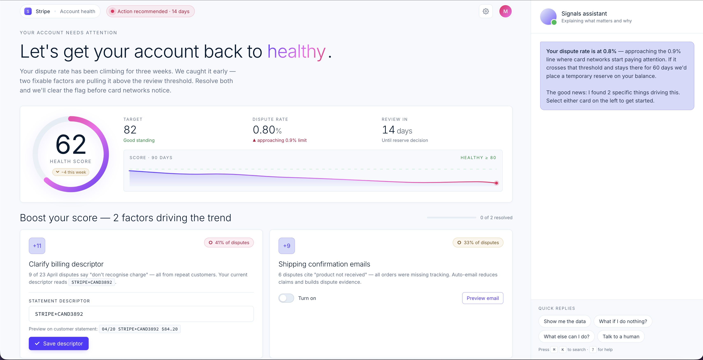
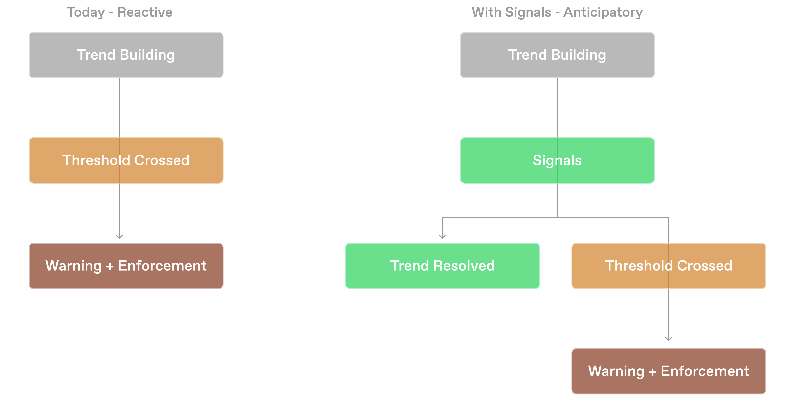
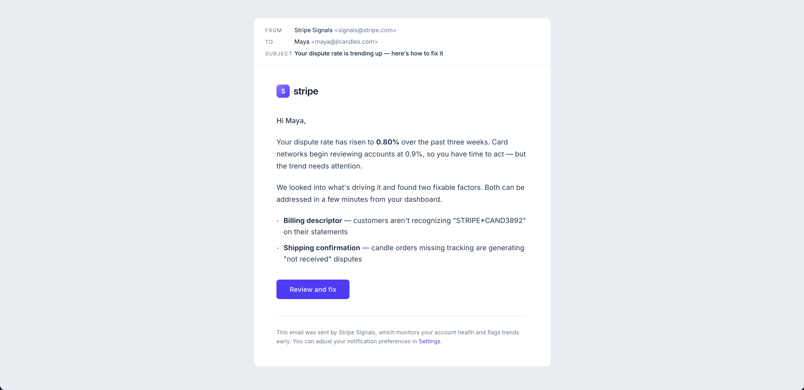
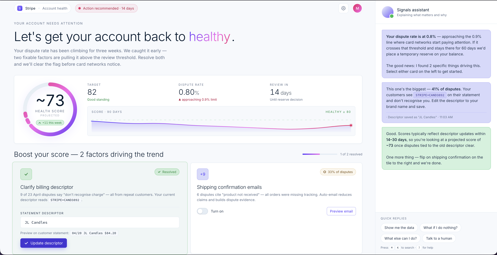
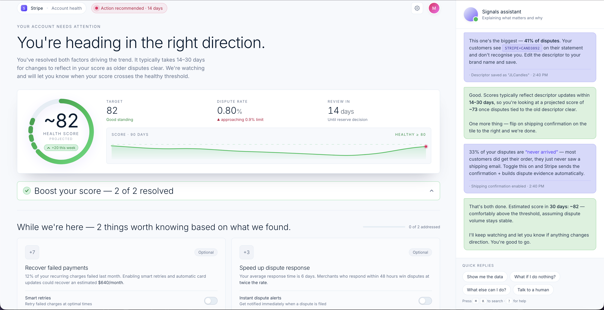

A cooperative model for merchant health, turning Stripe from silent enforcer to active partner.
Every merchant Stripe freezes is GDP that stops happening on Stripe’s rails. They have the data to prevent many of those outcomes, and they don’t use it that way. The relationship between Stripe and the merchant today is binary: invisible until it’s adversarial. Signals is the wedge that changes that and is the first instance of a broader model where Stripe becomes an active participant in merchant success, not just infrastructure.

The Problem
“Stripe brought my business to a dead stop.”
An email out of the blue. Stripe was refunding all charges. No prior warning. No escalation path.
“Stripe is about to refund €147k worth of payments to all of my customers.”
Products already shipped and delivered. Payouts frozen after a month with no warning.
“No method to resolve.”
A merchant describing flagged issues with no path forward. Reserve holds extended in 30-day increments, past the initial 120 days, indefinitely.
Stripe merchants go from zero warning to account freezes, held funds, and industry blacklists. The data to prevent this exists inside Stripe (chargeback rates, fraud trends, Radar block rates, failed payment patterns) but it’s never surfaced to the merchant in a way that’s actionable. The current experience is silence while things are fine, then an automated email with no explanation when it’s too late.
This matters more now because AI is lowering the barrier to starting a business. More first-time merchants who don’t understand dispute rates or monitoring programs are coming online. Stripe’s current model doesn’t scale for that population. The problem is real and it’s about to get larger.

The Solution
Here’s how it plays out for one merchant.
Maya recently started a candle business. Her chargeback rate is 0.8%. She doesn’t know that. She doesn’t really know what chargebacks are, other than sometimes customers dispute charges and Stripe handles it. She has about three weeks before Visa’s monitoring program starts flagging her account. She has no idea. This is the moment Signals exists for.
Notice
Not an alert that something is broken, but a message that Stripe has noticed a trend and wants to help. The tone sets the context for Maya letting her know this isn’t a warning but an invitation.

Understand
Technical data made legible. One score Maya can feel, anchored in a target she can work toward, with the assistant explaining what 0.9% actually triggers and why two specific factors are pulling the rate up. The translation is the design problem.
Diagnose and fix
Where a fix is a Stripe setting, Maya changes it here, in the moment. No new tab, no policy page, no support ticket. The diagnosis and the repair live in the same place, and the health score updates the instant she saves.

Resolution and follow-up
Both factors resolved, the projected score above the threshold, the trend line curving back toward green. The flow doesn’t end at the fix — Signals keeps watching until the trend actually reverses, which is the cooperative relationship rendered in product behavior.

The Approach
Why this shape?
Why a guided resolution flow instead of a dashboard, or an alert widget?
The dashboard assumes the merchant already knows what to look at. A dispute rate of 0.8% means nothing to a merchant who’s never heard the term. More data doesn’t close the gap — it just renders it with better charts.
The home page widget came closer. But when I pressure-tested it, the widget was just a banner with extra steps. It alerts and then it waits. A tile that says “attention” doesn’t diagnose a problem or fix one.
The resolution flow does both. It diagnoses what’s driving the trend, prioritizes the factors, and walks the merchant through fixing each one.
Why this scope?
Signals replaces the moment between silence and crisis, not the dashboard, not Payments, not Billing, Radar or Disputes. The existing modules work. The gap is what happens before the merchant ever reaches them.
How I’d measure success
The primary metric is reduction in merchants entering monitoring programs. The leading indicator is resolution flow completion rate — whether merchants actually engage with Signals when it reaches out. The counter-metric is whether merchants are making cosmetic fixes without addressing root causes, which would show up as trend reversals that don’t hold.
What I’d investigate next
The real tradeoff is how Signals softens Stripe’s enforcement posture, which could be exploited by actors who learn there’s a grace window before closure. The cooperative model only works if it doesn’t get gamed. Other open questions: what happens when a merchant ignores guidance and crosses the threshold anyway, what the enforcement handoff looks like, and what Signals costs Stripe to maintain operationally.
Who this touches
Risk Ops, Support, Radar, and Legal all sit in the space Signals operates in. The first conversation is with Risk Ops, because Signals intervenes where they currently make enforcement decisions.
The Pattern
Signals isn’t a feature. It’s the first instance of a new model — Stripe as an active participant in merchant success, not just infrastructure. The same pattern extends to failed payments, Radar calibration, and growth opportunities. Every merchant Stripe helps fix a problem is GDP preserved, revenue preserved, and a relationship that compounds.